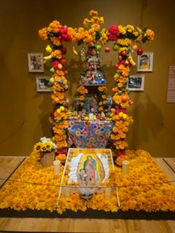
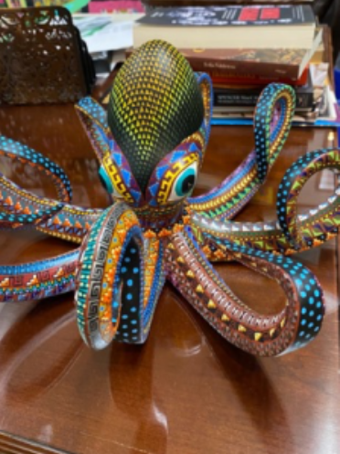
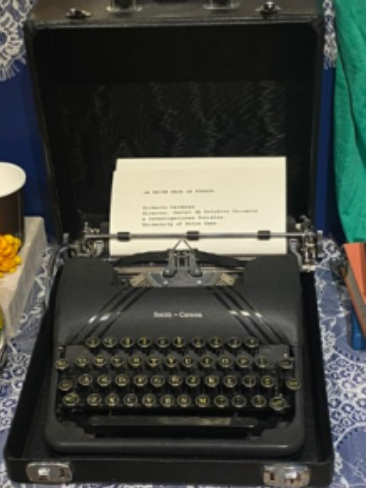

The end of October brings out our little witches and goblins for Halloween. For the Mexican community, it signals a different celebration also featuring skeletons and spirits, but with a different meaning: the Day of the Dead, a celebration of one’s ancestors whose spirits return every year. Presiding over this perhaps surprisingly festive holiday in Chicago is Jose Ochoa, president and CEO of the National Mexican Museum of Art in Pilsen.

Ochoa has headed the museum since 2024, when he replaced the iconic founding museum director, Carlos Tortoleno, who founded and ran the nationally recognized institution for over four decades. Today, Ochoa is working to position the museum for the future. Following a founder is always challenging, but Ochoa was pleased to discover a talented team in place.

“What I noticed, everyone who worked here felt honored and privileged and lucky. The average person who works here has been here 13 years, including my assistant Rachel who has been here from the beginning. People love it here! This was a well-oiled machine! Everyone knew what to do. Nothing was broken… Everyone here is a Mexican cultural missionary!”
Born in Toledo, Ohio and raised in Texas by Mexican parents, he discovered the flute in kindergarten, when he had a crush on the flute-playing pastor’s daughter. He eventually chose to play the flute in 6th grade when he first had the choice. “I loved it…I was the only boy; I was this oddity…I basically taught myself… I listened to classical radio [and classical music videos] and became a music geek.”
Winning competitions, he was accepted in the music program at Baylor, but not having had the professional training of other students, he found himself behind. “I was just lost,” he said, “a country bumpkin.” Moving on, he was accepted at the North Carolina School of the Arts where he again found musicians ahead of him but also was exposed to a wide variety of other artistic disciplines, including ballet at which he excelled. After graduation he joined the civic Corpus Christi concert ballet. Coincidentally, Ochoa’s background echoes the resume of the new Chicago History Museum president and CEO, Michael Anderson, also at one time a ballet dancer!

Ochoa got his master’s degree in interdisciplinary studies at West Texas A&M, where met his future wife and continued to play the flute and dance. In 2008, he and his wife moved to Nashville where he accepted a position as Superintendent of Cultural Arts for the park district.

In 2009, cash strapped in his department and searching for interns, Ochoa saw the posting for the Chi Arts founding artistic and executive director position in Chicago. Chi Arts was originally structured on the conservatory model as a “contract” high school in the Chicago school system. Launched in 2009 with significant backing from such major Chicago funders as the Chicago Community Trust and the Polk Bros Foundation, Chi Arts offered students a concentrated artistic pre-professional experience plus college preparatory academics. The position was perfect for Ochoa’s diverse background in performance and arts administration; he got the job. He felt it was his life’s work. Although the unique curriculum was embraced by the arts community, financial and union issues eventually led to its restructuring years later. During this challenging period, he added a Mexican octopus to his art collection to express the pressures he felt!

By 2023, Chi Arts was being pressured to change its status to a more traditional CPS school and Ochoa was contemplating a change. A headhunter who had offered him previous opportunities alerted him to the opening at the National Mexican Museum of Art. Filling the position took a year with various starts and stops. Ochoa was finally offered the job which he accepted with delight. He had always found the museum an important refuge.
“The museum was always like my sacred space, my secret space. I wasn’t part of the community, but it felt like ‘take me as I am.’ It was the only self-care that I had,” he said.


Among the traditions he embraced is the Dia de Muertos (Day of the Dead) exhibition. “Where Memory Lives: 40 Years of Dia de Muertos,” its current title distills the meaning of the celebration: the honoring of the memory of ancestors. The exhibition is drawn from the museum’s permanent collection, with a painting or display selected from each of the museum’s 40 years.


Mario Hernandez, associate director of museum education, explained the connection of the exhibits to the themes of the holiday: “These are representations of death but are tied into the overall idea of acceptance of our fate, carried through modern Mexican art… La Catrina, represented as a fancy woman wearing a fancy dress and her shoes and her accessories but she is still a skeleton. She is one of the first figures that remind us that regardless of background or social class, we all have an ultimate final fate…although people are physically gone, they can be remembered forever as long as their memory remains alive. So, these funny vibrant skeletons make speaking of death more accessible and less scary, more lighthearted,” said Hernandez.

The tradition represents the centuries old merging of the Mesoamerican tradition of the spirits coming back one day a year and the Catholic faith, brought by the Spanish, which honors the dead on All Saints Day, November 1. In some Mexican states, families gather in cemeteries with favorite flowers and foods of the dead to welcome the spirits, constructing offerings or ofrenda which are shared with family. City families also construct ofrendas in their homes, filled with objects related to the dead.

“We [the museum] have an annual Day of the Dead celebration outside that takes place at the end of October [in the adjacent Harrison Park, this year on October 24]. Families come out to make their own ofrendas in the park…people walk around and look around…this builds community…We have live music and dances related to Day of the Dead in Mexico,” said Hernandez.

“We also give away Pan de Muerto, a special bread that is baked only in the Day of the Dead season… One of the shapes looks very much like a body with its arms crossed over its chest.” Each state or community has its unique recipe and shape, depending on the type of bread grown and timing of the harvest.


Ochoa discovered that despite the energy and expertise in the staff, everyone was under-resourced and needed an updating of the infrastructure.
“Like most institutions of color…they don’t know what they don’t have…you learn to do without,” he said.
“In order to grow the excellence of the programs, we need a more fortified structural framework base that can truly hold the whole thing…I didn’t want to lose them (staff), I wanted to buoy them.”

Ochoa has brought in some consultants to help the understaffed departments. He’s established working board committees and invited staff to board meetings. “People are excited to hear things they’d never heard before…the board is more energized, the staff is more energized… I joke that the museum’s motto is “don’t worry, we’ll figure it out,” said Ochao.
“We’ve outgrown this building… telling 3000 years of Mexican art and culture on both sides of the border...in one permanent exhibit and a small, medium, and large gallery is tricky! I would love an expansion where we can have more spaces dedicated to different kinds of art and culture.

“We don’t have an acquisition fund yet. And that’s what I want to do is to build an acquisition fund, where the curator can say we’re missing this artist or this period or this state of Mexico, where we can be more intentional and either attract people who will gift those pieces to us or go buy them.”

“I have the privilege but also the responsibility to take care of this place and these people and what they have built. It’s a huge responsibility but I hope to do so humbly. It’s not one person or one thing…it’s all about giving the vision, the museum, the employees, the legacy, all that it needs.”

NOTE: Photos of exhibits were taken by Elizabeth Dunlop Richter at the
“Where Memory Lives: 40 Years of Dia de Muertos” exhibit currently at the museum.